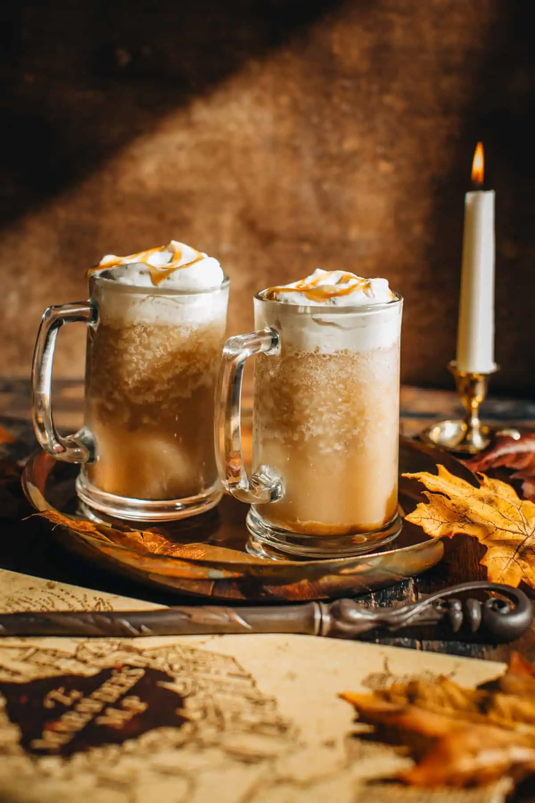

Harry Potter Recipes

Table of Contents
RECIPES
|  |
Frozen Butterbeer |
Prep Time: 5 min Cook Time: 5 min Servings: 6

|
Ingredients |
For each serving:
- 6 cups Ice cubes (enough to fill a gallon-sized freezer bag about half way)
- 1 Tbsp. Kosher salt (Ice cream salt or table salt will work too)
- 1 cup cream soda
- 1 tsp. butterscotch ice cream topping
For the Cream Topping:
- 1 c. heavy cream or whipping cream
- 1/4 c. butterscotch topping
|
|
Instructions |
Pre-Prep: Place ice cubes and salt in a gallon-sized
Ziploc bag.
For the Slush:
- Place cream soda and butterscotch in a smaller quart-sized Ziploc bag, press out all the air and seal tightly. Mix around until the butterscotch is mixed in with the cream soda.
- Place bag of soda IN the bag of ice and seal.
- Shake for about 3-5 minutes or until the soda is nice and slushy - if it gets too cold, wrap a dish cloth around it and continue shaking.
- Pour slush into a cup and top with butterscotch cream topping (below).
For the Cream Topping:
- Beat the cream and butterscotch with a mixer on high speed until stiff peaks form.
- Top the slush mix with the cream topping and enjoy!
Pumpkin Pasties |
Prep Time: 40 min Cook Time: 18 min Servings: 10
|
|
Ingredients |
For the Pumpkin Pasties:
- 2 pie crusts, store bought or homemade
- 3 oz (85 g) cream cheese, softened
- 1/3 cup (73 g) brown sugar
- 2 tsp (5 g) cornstarch
- 3/4 cup (183 g) canned pumpkin puree, at room
- 1 egg yolk, at room temperature
- 1 tsp vanilla
- 2 tsp pumpkin pie spice
- 1 tbsp (15 ml) heavy cream
For the Egg Wash & Sugar Topping:
- 1 egg, beaten
- 1/4 cup (50 g) granulated white sugar
- 1/2 tsp pumpkin pie spice
- turbinado sugar, for sprinkling
|
|
Instructions |
Putting Together the Pumpkin Pasties:
- Line two baking sheets with parchment paper and set aside.
-
Add the cream cheese, brown sugar and cornstarch to a
large bowl. Mix with an electric mixer on high speed
until smooth and creamy, about 2 minutes.
3 oz (85 g) cream cheese, softened,1/3 cup (73 g) brown sugar,2 tsp (5 g) cornstarch -
Add in the pumpkin puree, egg yolk, vanilla, pumpkin pie
spice and heavy cream. Mix on medium speed until smooth.
3/4 cup (183 g) canned pumpkin puree, at room ,1 egg yolk, at room temperature,1 tsp vanilla,2 tsp pumpkin pie spice,1 tbsp (15 ml) heavy cream -
Roll out the 2 pie crusts on a lightly floured surface
and cut 20 mini pumpkins out using a 4" pumpkin cookie
cutter. You will need to re-roll each pie crust to get
all 20. (You should be able to cut 10 out of each pie
crust.)
2 pie crusts, store bought or homemade - Transfer 10 of the pumpkins to the prepared baking sheets. (5 per each.)
- Add 1 heaping tbsp of pumpkin pie filling on the center of the 10 pumpkins on the baking sheets. (There will be a little bit of filling leftover.)
-
Use a pastry brush to brush the edges with egg wash and
place another pumpkin over top of each. Press the edges
shut with a fork and cut a small lightning bolt into the
center of each. Chill in the fridge for 20 minutes.
1 egg, beaten
Baking the Pumpkin Pasties:
- Preheat the oven to 400 degrees while the pumpkin pasties chill.
-
Combine the granulated sugar and pumpkin pie spice in a
small bowl.
1/4 cup (50 g) granulated white sugar, 1/2 tsp pumpkin pie spice -
Remove one of the cookie sheets of pumpkin pasties from
the fridge and brush the tops with egg wash. Then
sprinkle each pumpkin with the spiced sugar and a little
bit of turbinado sugar.
turbinado sugar, for sprinkling,1 egg, beaten - Bake for 17-19 minutes, or until lightly golden brown. Then let the pumpkin pasties cool on the cookie sheet for 5 minutes. Transfer to a wire rack to cool until cool enough to handle, about 15 more minutes.
- Repeat the steps with the remaining cookie sheet of pumpkin pasties.
Pumpkin Juice |
Prep Time: 5 min Cook Time: 5 min Servings: 20
|
|
Ingredients |
- 1 gallon (3.78 L) apple cider
- 3 cups (710 ml) apricot juice
- 15 oz (425 g) pumpkin puree
- 1/3 cup (73 g) brown sugar
- 4 tsp pumpkin pie spice
- 1 tbsp (15 ml) vanilla
- cinnamon sticks for garnish
|
|
Instructions |
-
Add the apple cider, apricot juice, pumpkin purée, brown
sugar, pumpkin pie spice and vanilla to a large pitcher
or a beverage dispenser. Stir with a whisk to combine
everything together.
1 gallon (3.78 L) apple cider,3 cups (710 ml) apricot juice,15 oz (425 g) pumpkin puree,1/3 cup (73 g) brown sugar,4 tsp pumpkin pie spice,1 tbsp (15 ml) vanilla -
Serve chilled and garnish with a cinnamon stick.
cinnamon sticks for garnish